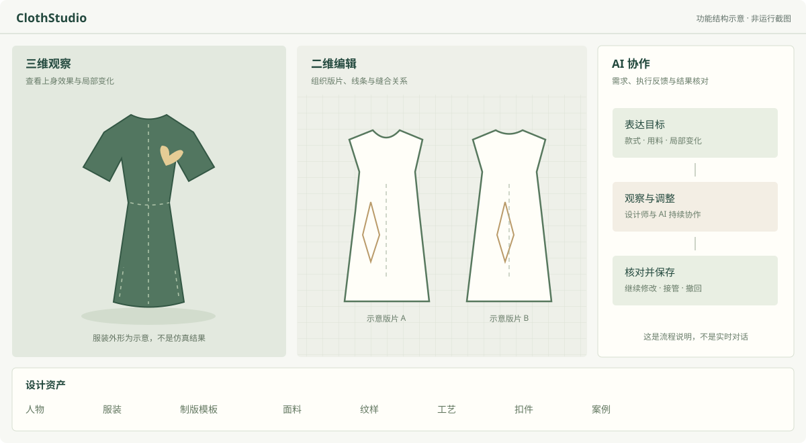

设计师可以直接改
选择对象，调整版片与外观，观察三维结果。
HUMAN + AI / GARMENT DESIGN
把版片、试衣、素材和对话放在同一个工作区。设计师直接调整，AI 参与执行，设计过程可以继续。
了解设计流程公开展示页 · 非在线设计器
版片定义结构
三维观察结果
对话推进设计
01 / WORKSPACE
三维、二维、对象属性、AI 对话与资产区域
围绕同一个服装项目组织。

选择对象，调整版片与外观，观察三维结果。
提出目标，在授权范围内推进任务，再核对结果。
保存、重开、修改或撤回，保留后续改款的空间。
02 / DESIGN JOURNEY
下面是本地已演示路径的说明。
点击阶段查看内容，不会调用模型。
新建项目，选择试衣人物，浏览可用的服装与设计资源。先确定设计对象，再开始编辑。
本地演示记录的文字说明验证范围：2026-11-09 的旗袍分段操作与保存重开。局部碰撞、领口合体、最终停稳和长任务效率仍在完善，不代表全部人物与服装场景均已通过。
03 / PUBLIC SCOPE
这个仓库介绍项目价值与使用方式，提供可以独立打开的静态展示页面。